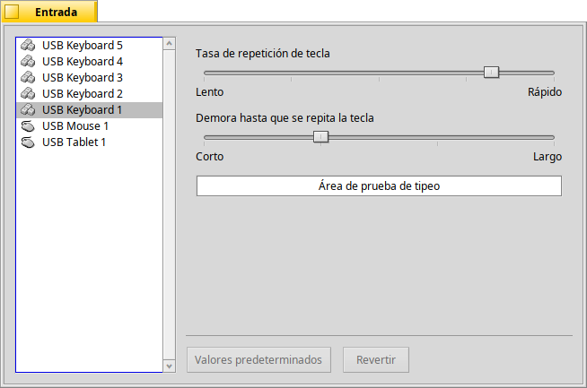
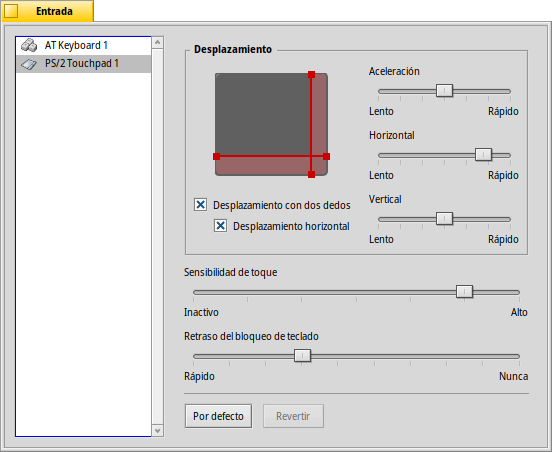

| Índice |
|
Teclado Ratón Panel táctil |
 Entrada
Entrada
| Barra de escritorio: | ||
| Ubicación: | /boot/system/preferences/Input | |
| Configuraciones: | ~/config/settings/Keyboard_settings ~/config/settings/Mouse_settings ~/config/settings/Touchpad_settings |
El panel de preferencias de entrada combina los cuadros de configuración de teclado, ratón y panel táctil anteriormente separados, más cualquier otro dispositivo de entrada reconocido por el sistema. La lista de dispositivos se encuentra a la izquierda, mientras que el panel a la derecha cambia de acuerdo con las configuraciones disponibles para el dispositivo seleccionado.
 Teclado
Teclado

Selecciona la velocidad de repetición y el retardo para que una tecla presionada comience a repetirse. Puede probar las selecciones en el campo de texto en la parte inferior.
| restablece todo a los valores predeterminados. | ||
| restaura los ajustes a como estaban al iniciar el panel de ajustes de teclado. |
Ratón

Primero seleccione su tipo de ratón: de 1, 2 o 3 botones. Se puede simular el segundo botón (o sea, el derecho) del ratón manteniendo presionado CTRL mientras hace clic con el botón izquierdo. Para el tercer botón de ratón (es decir, el central), la combinación es CTRL ALT y hacer clic con el botón izquierdo.
Se pueden cambiar de lugar los botones haciendo clic sobre ellos y eligiendo su nueva posición en el menú emergente.
Con los deslizadores a la derecha podrá ajustar la velocidad del doble clic, la velocidad del ratón y su aceleración. El área de prueba debajo de la imagen de un ratón puede usarse para verificar si la velocidad del doble clic es la adecuada: si al hacer doble clic sobre una palabra no la selecciona, es por que el ajuste está establecido en un nivel demasiado rápido (o tendrá que habituarse a hacer clic más rápidamente).
Hay tres que determinan cómo reaccionan las ventanas a los clics:
| Esta es la configuración predeterminada: al hacer clic en la ventana esta recibe el enfoque y es traída a primer plano. | ||
| Hacer clic en una ventana solamente le da enfoque, pero no la traerá a primer plano automaticamente. Para hacer eso, deberá hacer clic en su pestaña de título o borde o hacer clic en cualquier lugar mientras mantiene presionadas las teclas de gestión de ventanas CTRL ALT. | ||
| La ventana debajo del puntero del ratón obtiene el foco automáticamente. En realidad la sube, tal como se describe en |
Al activar la opción le ahorra el tener que primero hacer foco en una ventana inactiva para poder hacer clic en controles como un botón o un menú. Esto conlleva el riesgo de cerrar accidentalmente una ventana, por ejemplo, al hacer clic sin intención sobre el botón de cerrar al apuntar a la barra de título. Por otra parte, acelera considerablemente el flujo de trabajo.
Todas las configuraciones se aplican inmediatamente.
| restablece todo a los valores predeterminados. | ||
| restaura los ajustes a como estaban al iniciar el panel de ajustes de ratón. |
Panel táctil

Al arrastrar las líneas vertical u horizontal rojas en la ilustración de un panel táctil, puede establecer el área de desplazamiento (el área táctil ligeramente rojiza sobre un fondo gris oscuro). Al mover su dedo sobre esa parte del panel, moverá las barras de desplazamiento de una ventana consecuentemente.
To the right are sliders to set the general scroll acceleration and the vertical and horizontal scrolling speed.
The acceleration setting decides how much quicker a list scrolls by if you swish over the scroll area very fast. The scrolling speeds control the general speed when using the scroll area.
Below the touchpad graphics are checkboxes:
If you're using single finger scrolling with the above mentioned scrolling areas, activating will make scrollbars behave like scrolling on a smartphone: you move the finger up to have the contents scroll down.
enables vertical and optionally also on supported devices. Moving two fingers in parallel vertically or horizontally to scroll the contents.
With , this works just like on a smartphone. Disable the checkbox and directions reverse.
controls how the system reacts when your finger hits the edge of the touchpad:
| Deactivate edge motion detection. Like with a mouse reaching the edge of the desk, you'll have to lift the finger and move it back to the touchpad center. | ||
| By tap-dragging you can drag a file without using the physical click buttons of the touchpad: You tap a file and, without lifting your finger, start dragging the file around. With this setting activated, once your finger reaches an edge of the touchpad, the mouse pointer keeps moving. | ||
| Same as the previous setting, but also works when dragging with the physical click buttons. | ||
| This will always continue moving the mouse pointer when your finger hits the touchpad edge, even if you're not dragging anything. |
With active, you can simulate different clicks with your fingers (if your device supports that):
- 1 finger = left-click
- 2 fingers = right-click
- 3 fingers = middle-click
You can disable the if you're comfortable with those "finger clicks", and get more surface area to use on your touchpad.
Más abajo se halla otro deslizador para establecer la . Si ve que sus toques están siendo ignorados, aumente la sensibilidad. Si el sistema registra clics todo el tiempo cuando lo que intentaba hacer era mover el puntero del ratón, intente disminuirla.
Por último, puede establecer un . Si roza accidentalmente su panel táctil mientras está escribiendo y por ello termina moviendo el cursor de inserción de texto, intente disminuir el retraso de bloqueo.
| restablece todo a los valores predeterminados. | ||
| restaura los ajustes a como estaban al iniciar el panel de ajustes de panel táctil. |
He aquí un consejo que no está relacionado con los ajustes del panel táctil, sino que está relacionado con el tema en general:
¿Sabía que puede hacer un arrastrar y soltar usando solamente el panel táctil, sin tener que usar los botones? Para ello, realice un doble clic sin levantar el dedo en el segundo clic. El icono levantado seguirá el puntero del ratón y podrá arrastrarlo al mover su dedo. Luego levante su dedo para soltar el icono.
Si su dedo llega a un borde del panel táctil mientras arrastraba un icono, per el puntero del ratón aún no ha llegado al borde de la pantalla, ¿cómo seguir arrastrando el icono? Tan pronto como levante su dedo, el icono será soltado.
Dependiendo de su hardware, hay una característica estupenda: simplemente deje su dedo presionado en el borde del panel táctil. El puntero del ratón seguirá moviéndose automáticamente.